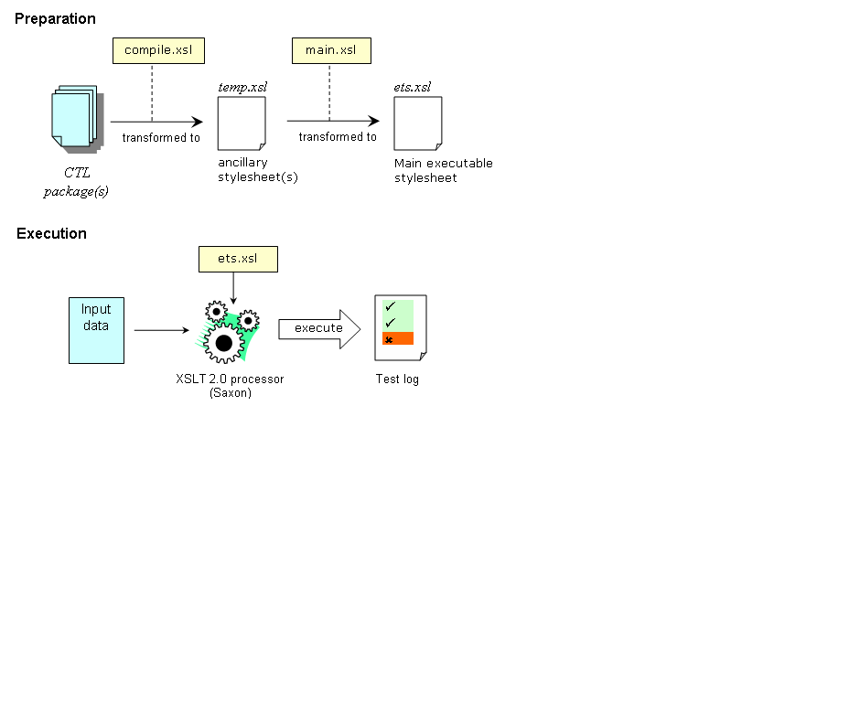

The TEAM engine provides a framework for performing automated functional testing of web services. The OGC compliance testing initiative (OGC/CITE) is currently using the test harness to assess conformance to OGC specifications.
Test case specifications are expressed using the CTL grammar; the test cases comprising a suite are processed to generate an executable test suite as shown in the figure below.
